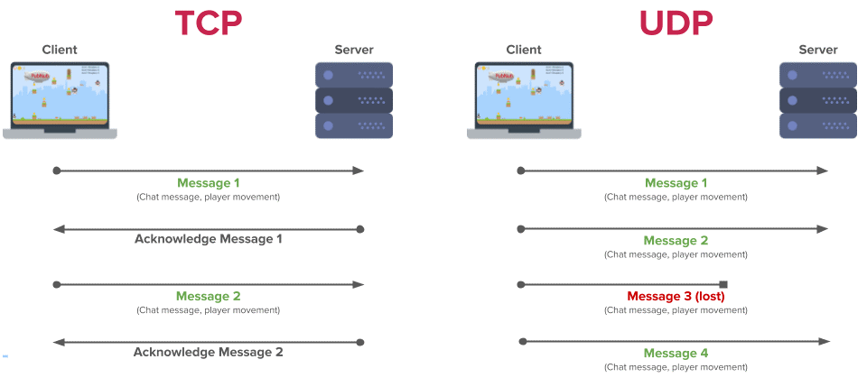
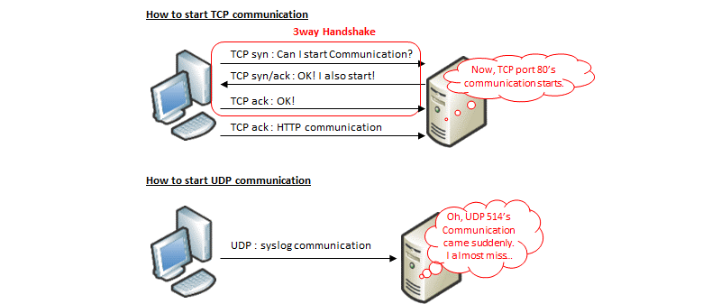

Чем отличаются протоколы TCP и UDP?
Вообще, протоколы транспортного уровня широко применяются в современных сетях. Именно они позволяют гарантировать доставку сообщения до адресата, а также сохраняют правильную последовательность передачи данных. При этом протоколы имеют ряд различий, что позволяет использовать их профильно, для решения своих задач каждый.

Протокол TCP (Transmission Control Protocol) – это сетевой протокол, который «заточен» под соединение. Иными словами, прежде, чем начать обмен данными, данному протоколу требуется установить соединение между двумя хостами. Данный протокол имеет высокую надежность, поскольку позволяет не терять данные при передаче, запрашивает подтверждения о получении от принимающей стороны и в случае необходимости отправляет данные повторно. При этом отправляемые пакеты данных сохраняют порядок отправки, то есть можно сказать, что передача данных упорядочена. Минусом данного протокола является относительно низкая скорость передачи данных, за счет того что выполнение надежной и упорядоченной передачи занимает больше времени, чем в альтернативном протоколе UDP.
Протокол UDP (User Datagram Protocol), в свою очередь, более прост. Для передачи данных ему не обязательно устанавливать соединение между отправителем и получателем. Информация передается без предварительной проверки готовности принимающей стороны. Это делает протокол менее надежным – при передаче некоторые фрагменты данных могут теряться. Кроме того, упорядоченность данных не соблюдается – возможен непоследовательный прием данных получателем. Зато скорость передачи данных по данному транспортному протоколу будет более высокой.
Приведем сравнение по нескольким основным пунктам:
• Надежность: в этом случае предпочтительнее будет протокол TCP, за счет подтверждения получения данных, повторной отправки в случае необходимости, а также использованию такого инструмента как тайм-аут. Протокол UDP такого инструментария не имеет, а потому при получении отправленные данные могут приходить не полностью;
• Упорядоченность: опять будет предпочтительнее TCP, поскольку этот протокол гарантирует передачу пакетов данных именно в том порядке, в котором они были отправлены. В случае с UDP такой порядок не соблюдается;
• Скорость: здесь уже лидировать будет UDP, так как более тяжеловесному TCP-протоколу будет требоваться больше времени для установки соединения, подтверждения получения, повторной отправки данных и т.д. ;
• Метод передачи данных: в случае с TCP данные передаются потоково, границы фрагментов данных не имеют обозначения. В случае с UDP данные передаются в виде датаграмм – проверка пакетов на целостность осуществляется принимающей стороной только в случае получения сообщения. Также пакеты данных имеют определенные обозначения границ;
Сравнивая оба протокола, очевидно, что протокол TCP – это, можно сказать, «снайпер». Прицелился, выстрелил, зафиксировал попадание, ищет следующую цель. UDP – это, скорее, «пулеметчик» - выставил ствол в направлении врага и начал долбить очередями, не слишком заботясь о точности. Как в войсках важны обе эти воинские специальности, так и в интернете важны оба этих протокола. TCP применяется там, где требуется точная и подтверждаемая передача данных – например, отправка фотографий, или переписка между пользователями. UDP, в свою очередь, нужен для общения в голосовом формате, или при передаче потокового видео, например, с веб-камер или IP-камер.
